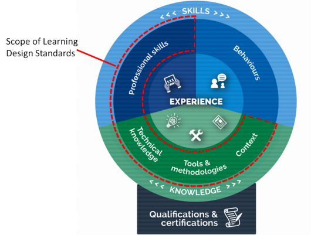

On this page
| Date | Version | Contact | Content |
|---|---|---|---|
11 Mar 2018 |
0.2 |
Libby Malcolm |
Initial draft |
15 Mar 2018 |
0.3 |
Grant Nicholson |
Added revision history, context diagram, SFIA mapping & minor tweaks |
4 May 2018 |
0.4 |
Grant Nicholson |
Incorporated feedback from PCB, first exposure draft |
18/06/2018 |
1 |
Ross McGuire |
Added – Intellectual property and moral rights |
18/06/2018 |
1 |
Ross McGuire |
Created DTA version |
The Australian Public Service Commission (APSC) has developed Learning Design Standards (LDS) to describe a capability needed by the Australian Public Service (APS) to help with the digital transformation of government services.
The LDS describes the context, business need, target audience, underpinning capabilities and curriculum for these capabilities. It does not prescribe or mandate a specific learning solution or format to build the capability described. That is left open for providers and sellers to design solutions that meet the specific needs of individual agencies.
This document is for:
All queries relating to this standard should be directed to capability@apsc.gov.au.
Intellectual property in parts of these materials may be owned by the Skills Framework for the Information Age (SFIA) Foundation.
The Australian Public Service Commission (APSC) holds an extended public sector licence on behalf of all Australian Public Service (APS) agencies covered by the Public Service Act 1999 (PS Act) for the use of SFIA materials. This licence permits certain uses of SFIA materials including the creation and internal distribution of products and services derived from or using significant extracts of SFIA materials. The licence does not extend to commercial use of the materials and does not cover Commonwealth bodies other than agencies under the PS Act.
These materials may only be used by APS agencies in accordance with the terms of the extended public sector licence granted to the APSC. No other uses of these materials are permitted. For more information on the APSC SFIA licence contact capability@apsc.gov.au.
Third-parties, including commercial entities and non-APS Commonwealth entities wishing to use these materials should contact SFIA via www.sfia-online.org
The Australian Government is modernising the way it delivers services to citizens. ‘Digital by default’ is the guiding principle. This means many APS agencies will need to engage multidisciplinary teams in the design, development and implementation of digital services as defined in the Digital Service Standard. Agile delivery management has been identified as a key skill that will be in high demand for the APS workforce to transform service delivery.
When proposing or developing a solution, it is important to be consistent with contemporary instructional design practices. Adult learning is a continuous process that is not limited to the classroom or formal training activities. Good learning design leverages the ways adults learn all the time through a range of experiences.
The diagram below shows some elements that you could include in a learning program.
Figure 1 - Pathways to learning
The APS is made up of many different departments and agencies. Each may have their own:
If your learning solution is intended for broad use across the APS you need to consider how it would apply in different contexts. Any digital solutions you develop need to be able to be deployed on a wide range of platforms.
The APS will require all digital learning solutions to be compatible with the following standards:
The APS recommend that digital learning solutions consider the following standards:
Agency requirements for assessment may vary. Formative and/or summative assessment may be offered by the provider and should be specified by the agency when engaging providers.
Formative assessment - monitors learning and gives ongoing feedback. It is used by facilitators to improve their teaching, and by learners to improve their learning. The purpose is assessment FOR learning. Examples of formative assessments are
Summative assessment - evaluates the level of success or capability at the end of a learning activity, comparing it against some standard or benchmark. The purpose is assessment OF learning. Examples of summative assessments are:
Agencies may extend, reduce or change the content of this LDS.
Agencies should highlight these changes so that providers can readily adapt their learning solutions to meet your agency needs.
The Australian Government is progressing a digital transformation agenda to revolutionise the way it delivers services. Australians are more mobile, more connected and more reliant on technology than ever before. The Digital Transformation Agency (DTA) is leading this transformation in order to improve how the Australian Government delivers services online.
As part of the digital transformation agenda, the APSC and the DTA are jointly delivering the Building Digital Capability Program. One of the main activities of this program is the identification of digital capability shortfalls and the definition of learning programs to build capability in those areas.
The Digital Transformation Agency guides government service modernisation through the Digital Service Standard (‘the Standard’). The Standard helps digital teams to build services that are simple, clear and fast.
![Diagram describing the Digital Service Standard and its steps to guide teams into building efficient services. It includes: Discovery - Start mapping the broader service landscape, researching the real needs and problems faced by your users, and understanding the policy intent and technology constraints. Alpha - Test out your hypotheses by building prototypes in code to explore different ways you might be able to meet your users' needs. Explore multiple ideas. Do user research to learn which approach works best and iterate your solution as you learn more. Beta - Start building based on the minimum viable product you defined at the end of Alpha. Build this as an accessible and secure service. Allow the public to trial the beta alongside the existing service. Use their feedback to improve the service. Live - Put the team and processes in place to continue operating and improving the service. Phasing out the old services and consolidating existing non?digital channels.](images/agile-delivery-management-2.jpg)
The Digital Service Standard suggests the ideal multidisciplinary team to design, build, operate and iterate a digital service. This team includes core (permanent) roles as well as extended roles that you can bring into the team when needed. People may perform one or many roles, depending on their capability and the workload.
Figure 2 - The digital delivery team
![Diagram showing the digital delivery team. The service manager is outside the team and responsible for the digital service. Stakeholders are outside of the team. Core Team is composed of Delivery Manager, Product Manager, User Researcher, Service Designer, Interaction Designer, Content Designer, Performance Analyst, Tester, Technology Lead, Developer. The Extended Team is composed of Ethical Hacker, Web Ops Engineer, Accessibility Diversity Specialist, Business Analyst. The extended team may also include various Subject Matter Experts as required.](images/agile-delivery-management-3.jpg)
The capabilities defined by the Learning Design Standards relate to the roles in a digital delivery team. An agency will be able to use the LDS to define an effective team that meets their specific agency requirements for digital transformation.
Members of multidisciplinary teams may perform many roles in their jobs. Each role has expectations of skill, behaviors and knowledge. You can verify these through relevant qualifications and certifications.
Figure 3 - Role composition

This Learning Design Standard only addresses learning outcomes for professional skills and knowledge. A person who has done training also needs to put it into practice. This allows them to gain experience and become effective. Individual agencies will determine how they manage experience.
Providers may wish to provide certifications that verify the learning outcomes specified in this LDS, but these are not mandated. It is up to individual agencies to decide if they want certification.
Individual agencies will define jobs according to their needs. Jobs may involve one role only, though it is becoming more common for multidisciplinary teams to have job fluidity. Members may perform many roles according to their capabilities and the needs of the team.
The primary function of agile delivery management is to ensure that the delivery team is delivering regular outputs that support the intended outcomes of the product or service. Delivery management achieves this by working with team members to ensure sequencing is logical and prioritised to deliver value to end users. Delivery Managers unblock issues, support the team, and monitor and improve performance of the team.
Delivery teams often focus on technical releases (e.g. a website, application, IT system), though it could be for a less tangible government product like a strategy, policy, grant program etc. In all cases, the Delivery Manager manages the flow of work so that the team is performing effectively and efficiently and actually releases something useful (not just planning artefacts).
An agile Delivery Manager uses agile methodologies, learning and iterating the product and processes frequently to meet users’ needs. They work with Product Managers to define the roadmap for products and services, remove blockers and support the team so that they can maintain velocity. They run the daily stand up, sprint planning meetings and retrospectives with the delivery team and make sure that the backlog and team spaces are up to date.
An agile Delivery Manager is skilled at guiding teams to deliver high-quality services in short delivery cycles. They seek constructive outcomes in discussions, challenging traditional assumptions while remaining willing to compromise when it is beneficial to progress. They are skilled at managing team dynamics and create a culture of innovation while working across departmental and other boundaries. They keep performance and morale high under difficult and challenging circumstances. They are skilled at giving people the space and tools to think creatively and do their best work.
The primary audience for this capability is APS employees who are responsible for product or service delivery teams and are seeking to further extend their skills in an agile service delivery team in the Australian Government context. They may be working as a Project Manager, Scrum Master or may come from a related background with some level of team leadership experience.
People within a multidisciplinary agile product or service delivery team performing related activities who are interested in building their skills and transitioning to a Delivery Manager role. They will have had exposure to agile methodologies.
Everybody has a different work history and career path. The following are some of the more common fields people may have come from before coming to the current role:
The following qualifications are relevant to the capability described in this LDS:
The skills, knowledge and attributes listed below are the minimum needed for someone to be effective in this role. A person undertaking the learning defined by this LDS can expect to have these after finishing the learning, though they may need experience of these in a workplace to embed the learning and become effective.
| Knowledge: | Skills: | Attributes: |
|---|---|---|
Organisational context
Methodologies, procedures and standards
Tools
Theory/theoretical
Principles
Concepts
|
Technical
Analysis, synthesis & evaluation
Planning and organising
Relationships/Interpersonal
Leadership and management
|
Digital
Professional
Personal
|
The Skills Framework for the Information Age (SFIA) is a global standard that defines Digital and other ICT related skills. A person possessing the following SFIA skills at the levels indicated would be capable of performing the role described by this standard.
| Code | Skill | Applicable Levels | Caveats* |
|---|---|---|---|
Project management |
5 / 6 |
- | |
Systems development management |
5 |
- | |
Release and deployment |
5 |
- | |
Relationship management |
5 |
- | |
Methods and tools |
5 |
- |
*Caveats are identified components of a SFIA skill that are not explicitly required for the current role. For the purpose of this Learning Design Standard the SFIA description should be read as though the caveated components were not included in the SFIA skill description.
The following table outlines content areas that need to be addressed.
Unit = area of learning.
Topic = Component of area of learning.
Learning objective: Describe the context and articulate the user need, benefits and outcomes when using agile to create government products and services.
| Topic Title | Topic Learning Objectives | Critical Content |
|---|---|---|
1.1 Agile definition |
Define agile and agile delivery management Describe the core values and success criteria of agile thinking Articulate the difference between agile thinking and a traditional waterfall approach |
|
1.2 Transforming government digital service delivery |
Define the Australian Government context for digital service delivery Describe how agile delivery management is integral to meeting the Digital Service Standard criterion |
|
1.3 The history of agile |
Outline how agile thinking evolved |
|
1.4 The benefits of agile delivery |
Describe the benefits of agile delivery |
|
1.5 Applying agile in government product and service delivery |
Describe the various ways to apply agile delivery |
|
1.6 Agile delivery principles |
Describe the principles of agile delivery |
|
Learning objective: Develop an agile mindset.
| Topic title | Topic learning objectives | Critical content |
|---|---|---|
2.1 A detailed look at the agile mindset |
Describe the difference between a framework, a process and a mindset Describe the agile mindset |
|
2.2 The agile mindset in the government context |
Describe how government uses an agile mindset |
|
2.3 Agile principles |
Describe the principles outlined in the Agile Manifesto |
|
2.4 A closer look at agile principles and the Australian Government’s Digital Service Standard |
Describe how the agile approach relates to the Digital Service Standard. |
|
Learning objective: Describe the frameworks, practices and artefacts used in agile delivery.
| Topic title | Topic learning objectives | Critical content |
|---|---|---|
3.1 A detailed look at the project and service development frameworks |
Describe the key project management frameworks |
|
3.2 Understanding agile framework practices and artefacts |
Describe the artefacts and practices for agile frameworks |
|
Learning objective: Describe the tools and techniques that are used in agile delivery.
| Topic title | Topic learning objectives | Critical content |
|---|---|---|
4.1 Agile techniques and rituals |
Describe the key techniques and rituals delivery managers use to manage team output |
|
4.2 Agile tools for the delivery manager |
Explore the Delivery Manager’s tools |
|
Learning objective: Define the role of the delivery manager in managing an agile delivery team.
| Topic title | Topic learning objectives | Critical content |
|---|---|---|
5.1 The role of the delivery manager |
Describe the delivery manager’s key responsibilities in a government team |
|
5.2 Understanding the role of the delivery manager in the context of the team |
Describe the layers and the team members in an agile team |
|
5.3 User centricity and the agile team |
Describe a user centered approach and how it informs the product backlog |
|